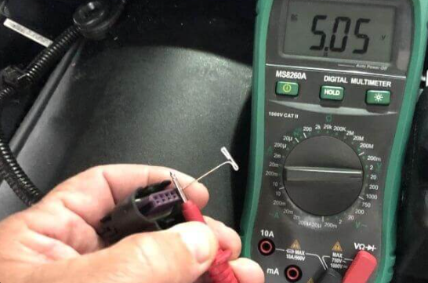
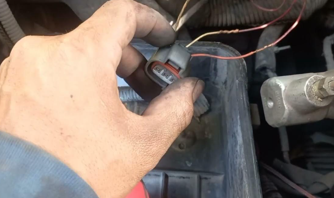

Servicio de revision a caja de cambio
Por Moises P.
Fecha: 20 de Marzo de 2024
el cliente, un entusiasta de los automóviles de alto rendimiento. a notado dificultades al cambiar de marcha y ruidos extraños provenientes de la transmisión de su automóvil, lo que está afectando su experiencia de conducción y el rendimiento general del vehículo. Moises realizo una prueba de diagnóstico utilizando un escaner de diagnóstico automotriz para leer los códigos de error almacenados en el sistema electrónico del automóvil. Analiza los resultados de la prueba para identificar posibles problemas en los módulos de control del motor, ABS y otros sistemas electrónicos críticos. Identifico un código de error relacionado con un fallo en el módulo de control del ABS ademas Descubre un cable dañado en el sensor de velocidad de la rueda delantera izquierda que podría estar causando el problema intermitente en el sistema de frenos ABS Solucion: Remoplazo del cable dañado del sensor de velocidad de la rueda
herramientas utilizadas: Escáner de diagnóstico automotriz. Juego de llaves y herramientas para acceso a los componentes del automóvil. Multímetro para verificar la continuidad eléctrica. Cable de repuesto para el sensor de velocidad de la rueda. Soldador y kit de reparación de cables.